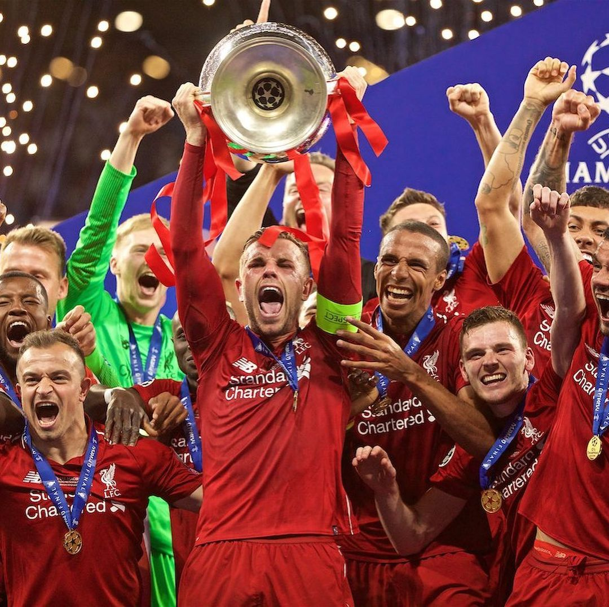

The Champions
Westham Gets Destroyed

Liverpool sit second in the Premier League, with the best defensive record and goal differential in the competition, and kicked off their Champions League campaign with a dominant win at one of Europe’s historic giants, so while stakes of the Carabao Cup might not get fans up like the other two potential trophies do, expectations will nonetheless be high, as they host West Ham at Anfield. The Hammers haven’t been doing great so far this year, with a measly four points ensuring they sit 14th in the table after five games, but they did make it to the third round of the Carabao Cup after scraping a 1-0 win over Bournemouth courtesy of a late Jarrod Bowen strike. Having ended their five-year David Moyes project, under which the Scot oversaw West Ham’s drop from top six contenders to perennial mid-table dwellers, the London club have gone continental, appointing former Spain and Real Madrid manager Julen Lopetegui to the chair in the summer. The Spaniard is potentially looking at a fully fit squad tomorrow, as Niclas Füllkrug appears to have recovered from a calf injury just in time to contribute in the competition that likely serves as the club’s most plausible avenue for success this season.
Kelleher Gets His Game Time

Kelleher deputised for the injured Alisson and kept a clean sheet last time out as the Reds defeated AFC Bournemouth 3-0 at Anfield. The Republic of Ireland international is set to retain the spot for the Carabao Cup third-round tie with West Ham United, as Alisson aims to be back in contention for the subsequent Premier League trip to Wolverhampton Wanderers on Saturday. “It’s sure that Caoimh will be in goal tomorrow,” head coach Slot said at his pre-West Ham press conference. “Alisson is getting there but I think this game is coming just a bit too early and we are looking at the weekend against Wolves, but it’s going to be tight so let’s see if he manages to be there. “But he will not be there tomorrow so Caoimh will be in goal tomorrow, that’s the one thing I know for sure at this moment. “I wasn’t surprised at all with his performance [against Bournemouth] because he was very good in pre-season already and he was very good with his national team as well. “It’s a good thing for us that we have two quality players, and we forget the third one in this position because in almost every position we have two but in goalkeepers we have got three or four and our third one is also a really good goalkeeper. So it’s a good thing for us. “Like you saw, we need to have a strong squad because you can pick up injuries or whatever can happen. So, it was good to see and pleasing to see that he kept a clean sheet – not in a way that he had nothing to do, he had to act a few times and he acted really well.”
Diaz Keeps flying

Diaz netted a quickfire double at Anfield on Saturday to help inspire the Reds to a 3-0 victory over AFC Bournemouth. The Colombian opened the scoring in the 26th minute and then grabbed his other goal 120 seconds later. Diaz, who also found the back of the net against Brentford and Manchester United (twice), took his 2024-25 tally in the league to five. Only Mohamed Salah (2020-21) and Michael Owen (2000-01) have scored more in the first five fixtures of a campaign. Owen also racked up five in five in 2003-04, as did Robbie Fowler in 1994-95. "If you're wondering when did Luis Diaz get to five goals last season in the Premier League? February. So it just shows the improvement he's made this season. "Absolutely outstanding, it really is."